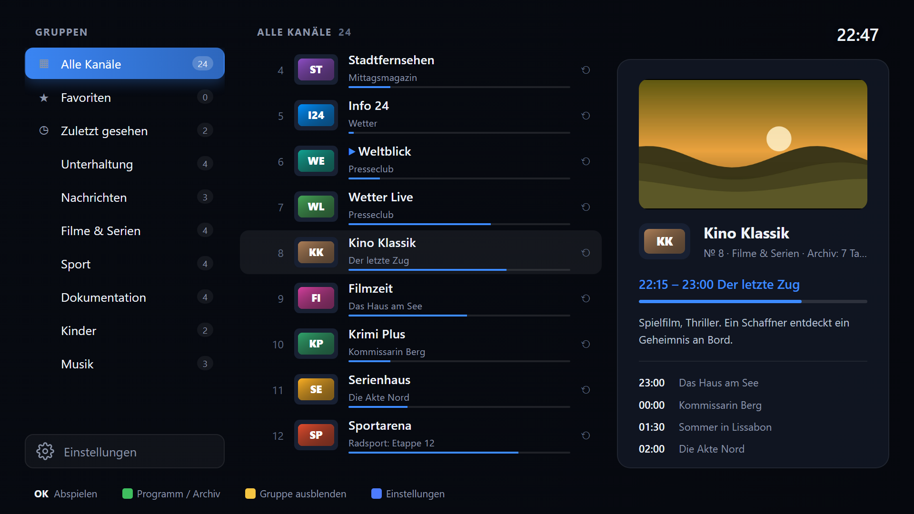

IPTVPlayer
IPTV-App für LG webOS – Repository für den Homebrew Channel
Im Homebrew Channel hinzufügen
- Auf dem Fernseher den Homebrew Channel öffnen.
- Oben rechts das Zahnrad (Settings) wählen, ganz nach unten zu Repositories.
- Add repository wählen und diese Adresse eingeben:
https://vbleich-lab.github.io/IPTVPlayer/api/apps.json
- Zurück zur App-Liste: IPTVPlayer erscheint dort und lässt sich installieren und später aktualisieren.

Mehr
Funktionen, Screenshots, Quellcode und manuelle Installation: github.com/vbleich-lab/IPTVPlayer
Mit PayPal unterstützen